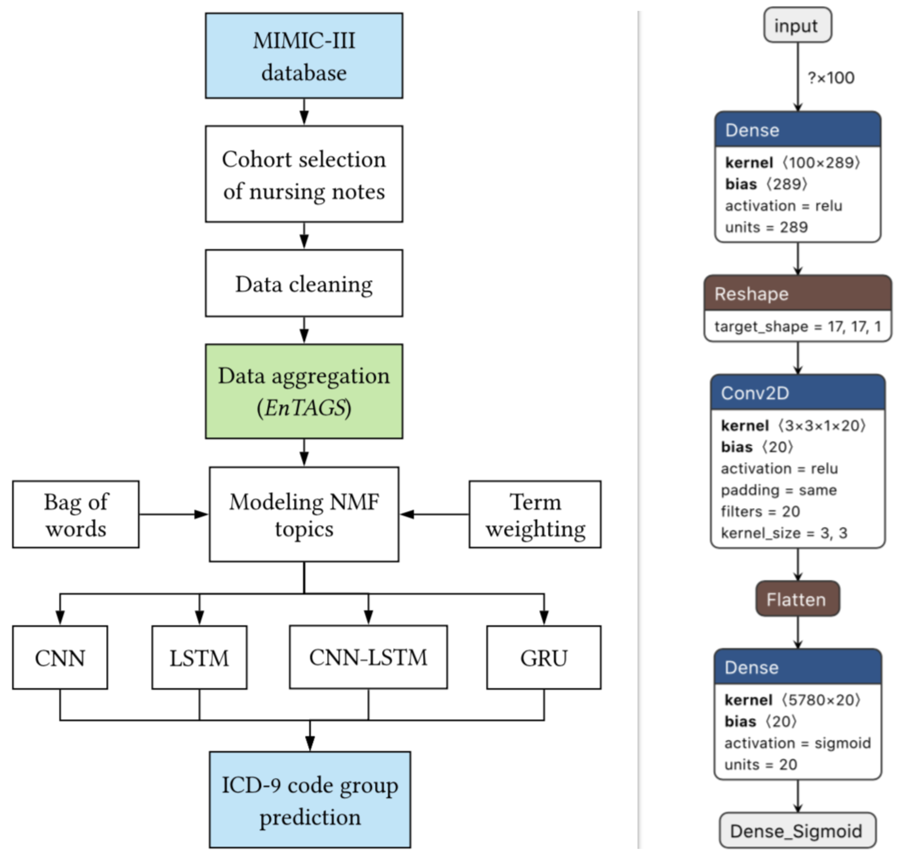

|

|
Aditya Jayasimha*,Tushaar Gangavarapu*, Sowmya Kamath S, and Gokul S Krishnan (2020): Deep Neural Learning for Automated Diagnostic Code Group Prediction Using Unstructured Nursing Notes. In Proceedings of the ACM India Joint International Conference on Data Science and Management of Data (pp. 152-160). ACM.
abstract
x
Deep Neural Learning for Automated Diagnostic Code Group Prediction Using Unstructured Nursing Notes.
Disease prediction, a central problem in clinical care and management, has gained much significance over the last decade. Nursing notes documented by caregivers contain valuable information concerning a patient's state, which can aid in the development of intelligent clinical prediction systems. Moreover, due to the limited adaptation of structured electronic health records in developing countries, the need for disease prediction from such clinical text has garnered substantial interest from the research community. The availability of large, publicly available databases such as MIMIC-III, and advancements in machine and deep learning models with high predictive capabilities have further facilitated research in this direction. In this work, we model the latent knowledge embedded in the unstructured clinical nursing notes, to address the clinical task of disease prediction as a multi-label classification of ICD-9 code groups. We present EnTAGS, which facilitates aggregation of the data in the clinical nursing notes of a patient, by modeling them independent of one another. To handle the sparsity and high dimensionality of clinical nursing notes effectively, our proposed EnTAGS is built on the topics extracted using Non-negative matrix factorization. Furthermore, we explore the applicability of deep learning models for the clinical task of disease prediction, and assess the reliability of the proposed models using standard evaluation metrics. Our experimental evaluation revealed that the proposed approach consistently exceeded the state-of-the-art prediction model by 1.87% in accuracy, 12.68% in AUPRC, and 11.64% in MCC score.
.url (draft)
.pdf
.bib
x
Deep Neural Learning for Automated Diagnostic Code Group Prediction Using Unstructured Nursing Notes.
@article{gangavarapu-cods-comad-2020,
title="Deep Neural Learning for Automated Diagnostic Code Group Prediction Using Unstructured Nursing Notes",
author="Jayasimha, Aditya and Gangavarapu, Tushaar and Kamath S, Sowmya and Krishnan, Gokul S",
booktitle="Proceedings of the ACM India Joint International Conference on Data Science and Management of Data",
series = "CoDS-COMAD '20",
year="2020",
publisher="ACM",
address = "New York, NY, USA",
pages="152-160",
numpages = "9",
doi="10.1145/3371158.3371176",
location="Hyderabad, India"
}
|
conference
clinical decision support systems
deep learning
disease prediction
healthcare analytics
multi-label classification
natural language processing
|

|
Tushaar Gangavarapu*, Aditya Jayasimha, Gokul S Krishnan, and Sowmya Kamath S (2019): Predicting ICD-9 code groups with fuzzy similarity based supervised multi-label classification of unstructured clinical nursing notes. Knowledge-Based Systems, Elsevier (KnoSys) 105321.
abstract
x
Predicting ICD-9 code groups with fuzzy similarity based supervised multi-label classification of unstructured clinical nursing notes.
In hospitals, caregivers are trained to chronicle the subtle changes in the clinical conditions of a patient at regular intervals, for enabling decision-making. Caregivers’ text-based clinical notes are a significant source of rich patient-specific data, that can facilitate effective clinical decision support, despite which, this treasure-trove of data remains largely unexplored for supporting the prediction of clinical outcomes. The application of sophisticated data modeling and prediction algorithms with greater computational capacity have made disease prediction from raw clinical notes a relevant problem. In this paper, we propose an approach based on vector space and topic modeling, to structure the raw clinical data by capturing the semantic information in the nursing notes. Fuzzy similarity based data cleansing approach was used to merge anomalous and redundant patient data. Furthermore, we utilize eight supervised multi-label classification models to facilitate disease (ICD-9 code group) prediction. We present an exhaustive comparative study to evaluate the performance of the proposed approaches using standard evaluation metrics. Experimental validation on MIMIC-III, an open database, underscored the superior performance of the proposed Term weighting of unstructured notes AGgregated using fuzzy Similarity (TAGS) model, which consistently outperformed the state-of-the-art structured data based approach by 7.79% in AUPRC and 1.24% in AUROC.
.url
.pdf (draft)
.bib
x
Predicting ICD-9 code groups with fuzzy similarity based supervised multi-label classification of unstructured clinical nursing notes.
@article{gangavarapu-knosys-2019,
author = "Tushaar Gangavarapu and Aditya Jayasimha and Gokul S. Krishnan and Sowmya Kamath S.",
title = "Predicting ICD-9 code groups with fuzzy similarity based supervised multi-label classification of unstructured clinical nursing notes",
journal = "Knowledge-Based Systems",
pages = "105321",
year = "2019",
issn = "0950-7051",
doi = "https://doi.org/10.1016/j.knosys.2019.105321",
url = "http://www.sciencedirect.com/science/article/pii/S0950705119305982"
}
|
journal
clinical decision support systems
disease prediction
healthcare analytics
ICD-9 code group prediction
machine learning
natural language processing
|